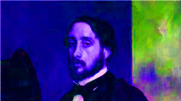
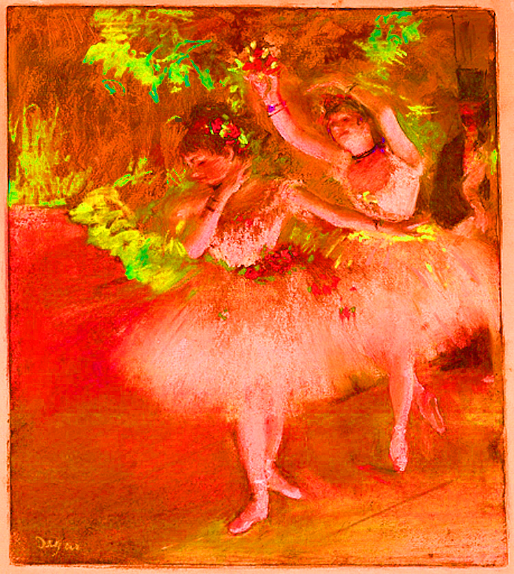

My Wild Wild Web of Smithsonian about Edgar Degas
A famous art piece of his is the Absinthe Drinker which is stored in the Musée d'Orsay in Paris today. "The most famous painting by Edgar Degas is a representation of the increasing social isolation in Paris during its stage of rapid growth. It depicts a woman staring dully with a glass of Absinthe in front of her. A man who looks like an alcoholic sits beside her." explains learnodo-newtonic.com
Little Dancer of Fourteen Years is another amazing art work that has a home down here in D.C. at the Nationl gallery of art, along with her "twin". He has done many other things that don't fit in this page but are beautiful.
Edgar Degas had 3 Periods. Impressionism was the first one, Realism came next and Modern art came last. All are very interesting artistic styles.
His paintings are not as famous as Vincent Van Gogh's, but his paintings are still very famous. He is a very interesting man.
Degas is a very impressing man. Mostly because one of his art styles is Impressionism.